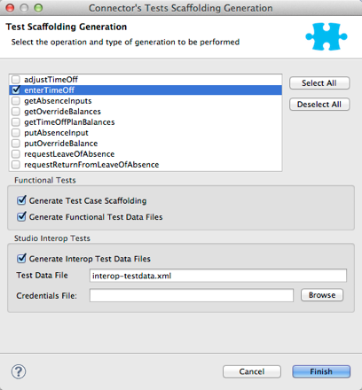

Developing DevKit Connector Tests
While DevKit doesn’t enforce writing tests, you should develop unit and functional tests for your connector as part of the development process. A connector should not be considered production-ready without a test suite.
While testing strategy may vary extensively based on your specific needs, this document introduces the basics of what Mule and DevKit make available to support testing efforts.
Prerequisites
This document assumes that you:
-
Installed the Anypoint Connector DevKit Plugin as described in Creating an Anypoint Connector Project
-
Are familiar with Anypoint Studio
-
Are familiar with Maven build manager for Java
-
Are ready to prepare a test suite for your new connectors
-
Are familiar with jUnit - The Regression and Smoke Test scaffolds make calls to jUnit
Areas to Test
Incorporate these tests in your test suite:
-
Input data validation:
-
Run consistency checks on the inputs if your connector accepts user parameters or parameters from another application. Parameters taken by the cloud service may be optional, while others must adhere to certain rules.
-
Implement unit tests that assign valid or invalid inputs to each of your connector’s methods, and check that the input validation responds accordingly.
-
-
API Interaction:
-
Handle connection or communication errors if your connector communicates over the Internet with a remote service, typically by either retrying or by throwing a clear exception.
-
Test error handling regardless of the type of error handling strategy you choose.
-
Mock up testing a Web service.
-
Point the connector to your test endpoint instead of a production target so that you can more easily reproduce error conditions like timeouts or connection loss.
-
-
Mule ESB Integration:
-
Cover all operations in your connector’s test suite—test every operation and parameter at least once.
-
Pass in and receive all reasonable inputs and outputs for each operation.
-
Pay special attention to covering complex data types passed into and received from operations in XML, since these can be tricky.
-
Test the use of default and optional parameter values in the XML to make sure they behave as expected.
-
Test cases where you expect the connector to raise exceptions.
-
-
Studio Integration:
-
Test your connector’s appearance and usability in Studio.
-
Include the behavior and prompts in the properties dialog, tooltips generated from your Javadoc comments, etc. The only way to test this is to manually use the connector in Studio.
-
Generate Tests Scaffold
A test scaffold is a set of Java files that appear under src/test/java after you use Anypoint Studio to generate tests. Studio generates these files:
Test Runners - Runs sets of test cases:
-
Regression test suite file - You can use this code to uncover new bugs by comparing the previous state of the connector to the current. If this is the first time run, it finds new bugs.
-
Smoke test suite file - Reveals simple issues such as "does this feature run?" that you can use to ensure that the basic behavior of your connector functions as expected.
Regression and Sanity Test Levels:
-
Test case automation Java files - Scaffolds tests for each method in your connector.
-
Optional test data files - Provides test data for your connector.
To create a test case scaffold:
-
Right-click your project in Package Explorer and click Anypoint Connector > Generate Tests:

-
Click the methods that you want to create a test scaffold for, or click Select All. The wizard displays choices from methods in your application, for example, this application contains many methods:
 -
Click Generate Test Case Scaffolding to create the scaffold files.
-
Click additional choices if you want Studio to create test data that you can use to test your connector:
-
Generate Functional Test Data Files
-
Generate Interop Test Data Files
-
-
Click Finish. Studio creates files that appear in Package Explorer under src/test/java.
-
Add your code to the scaffolded tests. To run your tests, see Running Generated Tests.
Example Scaffold File
Test example:
package org.mule.modules.automation.testcases;
import org.junit.After;
import org.junit.Before;
import org.junit.Test;
import org.junit.experimental.categories.Category;
public class EnterTimeOffTestCases
extends myTestParent
{
@Before
public void setup() {
//TODO: Add setup required to run test or remove method
initializeTestRunMessage("enterTimeOffTestData");
}
@After
public void tearDown() {
//TODO: Add code to reset sandbox state to the one before the test was run or remove
}
@Category({
RegressionTests.class,
SmokeTests.class
})
@Test
public void testEnterTimeOff()
throws Exception
{
Object result = runFlowAndGetPayload("enter-time-off");
throw new RuntimeException("NOT IMPLEMENTED METHOD");
}
}You can replace the "TODO" statements with code for your tests.
Testing Procedure
The Anypoint Connector DevKit’s testing procedure provides these features.
Objectives
-
Automation test suite integrated to the connector.
-
Real sandbox and Mule server is used when running the tests.
-
Automation test suite maintenance should be minimal.
-
Outdated automation suites don’t affect development.
Test Creation Criteria
-
Launches and completes a Mule instance for each test ensuring isolation from the rest of the suite.
-
setUp() method creates the test fixture prior to running the actual test. Entities are created specifically for testing an operation.
-
Test data values, used as input for the test, are kept separated from tests, as beans in a Spring file.
-
Tests should be flexible enough to support all possible entities and amount of them (if applicable) and should only have to be updated if business logic changes happen on the operation or the operation itself is modified (for example, a signature change).
-
One Mule flow for each operation. Java code to glue operations into more complex use cases.
-
Tests should clean up after themselves. Sandbox is left in the state prior to running the test.
-
Tests should only test one thing at a time.
Coverage Categories
-
Smoke suite ensures tests preconditions are met for a Regression run.
-
Regression suite includes at least one test case for each operation. Input on this kind of tests is taken from the Mule Message and thus they’re fully parameterized and their data can be modified from the AutomationSpringBeans.xml file.
Test Creation Criteria - Coverage Categories
mule-connector-test framework
Objectives
-
Consistent test suite implementation through the different connectors business models.
-
Increase code reusability.
-
Improved test case readability by encapsulating complexities.
-
Reduce maintenance cost.
-
Robustness by isolating test suite implementation from Mule classes changes.
Concepts
Use cases are built as a sequence of connector operations calls. Prior to running a use case a TestRunMessage is initialized and loaded with data required by the use case. Once an operation is invoked the content of the TestRunMessage is turned into a MuleEvent and then consumed by the operation. Asserts are then applied to the payload of the operation under test.
Maven Dependency
mule-devkit-parent contains the framework version property (that can, if necessary, be overridden on the connector pom) and its dependency node.
...
<properties>
...
<connector.test.version>2.0.6</connector.test.version>
</properties>
<!-- Mule Connector Test Framework -->
<dependency>
<groupId>org.mule.modules</groupId>
<artifactId>mule-connector-test</artifactId>
<version>${connector.test.version}</version>
<scope>test</scope>
</dependency>
...Framework and Test Suite Components
ConnectorTestCase Class
ConnectorTestCase class inherits from org.mule.tck.junit4.FunctionalTestCase and wraps FunctionalTestCase methods in methods that facilitate automating connectors operations use cases and enforce a uniform approach on the construction of test suites. ConnectorTestCase is by <Connector>TestParent.java and this class becomes the parent test class for all of the test cases.
ConnectorTestUtils Class
Provides methods for working with NullPayload, initialization of random test data and also date manipulation on the Spring file. Also enhances the exception message that’s displayed for more accurate debugging.
<Connector>TestParent Class
Extends the ConnectorTestCase class and might be used to override default framework configuration settings, add OAuth capabilities, implement helper methods, or store global settings for example to test run time out rules.
Common use cases of the service can be defined as this class methods in order to make them available to the rest of the test suite. This would make tests more readable and related to the specific domain of the connector.
All TestCases classes must extend from this TestParent.
<OperationName>TestCases Class
Note: Do not run automation tests automatically by Maven as they require credentials.
Each operation on the connector has its <OperationName>TestCases.java class that contains its related test cases. The sequence of operations called along the @Before, @Test, @After cycle make an operation use case.
...
public class <OperationName>TestCases extends <ConnectorName>TestParent {
// Private attributes used as auxiliary fields for storing test run values
private Integer leadRecordId;
// Create the test fixture
@Before
public void setUp() throws Exception {
...
}
// Return the sandbox to its original state
@After
public void tearDown() throws Exception {
...
}
// Invoke the flow of operations under test and asserts on its payload
@Category({SmokeTests.class, RegressionTests.class})
@Test
public void test<operationName>() {
try {
...
} catch (Exception e) {
fail(ConnectorTestUtils.getStackTrace(e));
}
}
}
...Test Resources
-
AutomationSpringBeans.xml - Contains the maps and POJOs required by the tests to run.
-
automation-test-flows.xml - A collection of flows (each containing a connector operation) that are going to be invoked on the tests.
-
automation-credentials.properties - Stores the connector credentials and authenticated user related information.
Test Runners
Different sets of tests can be run with the aid of runners. This is the reason test cases are classified into two categories:
-
Smoke: Tests that verify operations used on @Before and @After methods, thus assuring that it makes sense to run the test suite.
-
Regression: Positive test on which operation attributes are passed from Message.
Suite Implementation
Test Development Environment Set Up
After building the connector, add target/generated-sources/mule to the project build path, it might be necessary to add additional generated sources to the build path depending on the connector (such as target/generated-sources/cxf).
Also, if the connector is Standard, remember to add a muleLicenseKey.lic to the src/test/resources folder and to remove it prior to committing your changes.
Packages and Files
-
org.mule.modules.<connector-project>.automation contains the <Connector>TestParent and the SmokeTests and RegressionTests categories interfaces.
-
org.mule.modules.<connector-project>.automation.testrunners contains the runners (RegressionTestSuite, SmokeTestSuite).
-
org.mule.modules.<connector-project>.automation.testcases contains the functional test cases exclusively.
-
<connector-project>/src/test/resources contains automation flows, credentials and Spring beans files:
-
AutomationSpringBeans.xml
-
automation-test-flows.xml
-
automation-credentials.properties
-
Automation Flows
For each operation a maximum of two flows is placed on the automation-test-flows. One for mandatory attributes (this will test that no mandatory argument was left unimplemented on the connector) and if applicable another with all attributes (mandatory and optional, to build a more general case on the operation).
automation-test-flows.xml and Operation Attributes
Each operation on the connector has at least a corresponding flow on the automation-test-flows file. The flow and its associated operation should be thought of as resources that can be called from multiple tests. Flow names should be the same as the operation they contain or at least start with the name of the operation they contain, for example:
<flow name="<operation-name>" doc:name="<operation-name>">
<marketo:<operation-name> config-ref="<ConfigName>"
doc:name="<operation-name>" ... />
</flow>
<flow name="<operation-name>-<particular-case>" doc:name="<operation-name>">
<marketo:<operation-name> particularCaseAttribute="#[flowVars.attributeName]"
config-ref="<ConfigName>" doc:name="<operation-name>" ... />
</flow>Operation attributes are to be populated in this fashion:
attributeName="#[flowVars.attributeName]"
Or this other case:
<taleo:<entityName> ref="#[flowVars.<entityName>Ref]"/>
In the case of being given the choice of passing non-primitive types (for example, POJOs, List<POJOs>, Map<POJOs>, etc.) either from the payload, by reference, or by manually creating it using Anypoint Studio, either taking the value from the payload or by reference should be selected.
<!-- mobjects value passed by as reference -->
<flow name="sync-mobjects" doc:name="sync-mobjects">
<marketo:sync-mobjects config-ref="Marketo" doc:name="Sync MObjects"
operation="#[flowVars.operation]" type="#[flowVars.type]">
<marketo:mobjects ref="#[flowVars.mobjectsRef]"/>
</marketo:sync-mobjects>
</flow>Or:
<!-- mobject value taken from payload -->
<flow name="sync-mobjects" doc:name="sync-mobjects">
<marketo:sync-mobjects config-ref="Marketo" doc:name="Sync MObjects"
operation="#[flowVars.operation]" type="#[flowVars.type]"/>
</flow>Keeping Updated Headers
Change the connector version to current to avoid the configuration xml to get broken, e.g. from http://www.mulesoft.org/schema/mule/taleo/1.0-SNAPSHOT/mule-taleo.xsd to http://www.mulesoft.org/schema/mule/taleo/current/mule-taleo.xsd.
Credentials
Connector credentials should be picked from the automation-credential.properties file during test development or if tests are to be run from within Eclipse. Populate the config element field with placeholders: configRefAttribute="${serviceName.configRefAttribute}"
For example:
<marketo:config name="Marketo" userId="${marketo.userId}"
key="${marketo.key}" endpointUrl="${marketo.endpointUrl}" doc:name="Marketo">
<marketo:connection-pooling-profile initialisationPolicy="INITIALISE_ONE"
exhaustedAction="WHEN_EXHAUSTED_GROW"/>
</marketo:config>Create a property placeholder that references automation-credentials.properties or add xmlns:context="http://www.springframework.org/schema/context" as an attribute of the Mule node as one of its child node:
<context:property-placeholder location="automation-credentials.properties" />Prior to committing, change the location value to the following to run the suites from the console or build plan by passing the URL where the automation-credentials.properties are stored:
<context:property-placeholder location="${<CONNECTOR_NAME>_CREDENTIALS}" />Test Data Using Spring Beans
AutomationSpringBeans stores the test data required for each test to run.
The most common case is to have a <testMethod>TestData map containing all the primitive values or bean references for a specific test. For more complex cases, additional beans for the test may be required besides the main "TestData" map.
The approach is that each test has its set of dedicated test values, hence the convention. Reusing the same bean on different test results in them being coupled; if some specific data setup is desired for a particular test, changes might end up producing an unexpected behavior on others.
By convention all bean IDs related to an operation should begin with the operation name followed by the bean class. This avoids name conflicts and make clear on which operation this bean is used.
<!-- get-lead -->
<bean id="testGetLeadLeadKey" class="com.marketo.mktows.LeadKey">
<property name="keyType">
<util:constant static-field="com.marketo.mktows.LeadKeyRef.IDNUM" />
</property>
</bean>
<util:map id="testGetLeadLeadRecord" scope="prototype">
<entry key="City" value="city" />
<entry key="Company" value="company_title" />
<entry key="Country" value="country" />
<entry key="FirstName" value="first_name" />
<entry key="LastName" value="last_name" />
<entry key="MobilePhone" value="cell_phone" />
<entry key="Phone" value="work_phone" />
<entry key="State" value="state" />
<entry key="Title" value="job_title" />
</util:map>
<!-- testGetLead method TestData map -->
<util:map id="testGetLeadTestData" scope="prototype">
<entry key="type" value="LeadRecord" />
</util:map>-
In spring use scope="prototype" (if applicable) to ensure values from previous tests (ids, etc) are not reused in the following tests.
-
"TestData" map can be used to store expected results for a test in case the expected value relates to the data been passed to them.
<util:map id="createBatchAttendeeListTestData" map-class="java.util.HashMap"
key-type="java.lang.String" value-type="java.lang.Object" scope="prototype">
<entry key="payloadContent" value-ref="attendeeBatch"/>
<entry key="batchType" value="CREATE"/>
<entry key="expectedRecordsSucceeded" value="2"/>
</util:map>
@Test
public void testCreateBatchAttendeeList() {
...
assertEquals(payload.getRecordsSucceeded(),
getTestRunMessageValue("expectedRecordsSucceeded"));
}Relevant Cases Derived From Data
-
Attribute types or entity members that are non primitive values (for example, an entity having a date field or complex types).
-
Wildcards and special characters on queries.
-
Output entities, for example, list containing different types of records.
-
If client operation has not merely been wrapped, exercise connector custom code through a more complex test data setup for the test. An example of this are methods that receive a data representation object and return a concrete instance (Hint: Check the developer’s unit tests).
ConcreteInstance fromMap(Map<String,Object> mapRepresentation)
Fields With Unique Values
Generate entity fields that contain unique values dynamically in order to make the automation runs more robust. For example:
<bean id="randomEmailAddress"
class="org.mule.modules.tests.ConnectorTestUtils"
factory-method="generateRandomEmailAddress"
scope="prototype" />Date Generation Common Cases
<bean id="xmlGregorianCalendarDateInThePast"
class="org.mule.modules.tests.ConnectorTestUtils"
factory-method="generateXMLGregorianCalendarDateForYesterday"
scope="prototype" />User Related Data
Use the automation-credentials.properties files in conjunction with AutomationSpringBeans.xml to test user related operations.
automation-credentials.properties
taleo.username=username
taleo.password=password
taleo.companyCode=companyCode
taleo.userId=42AutomationSpringBeans
<bean class="org.springframework.beans.factory.config.PropertyPlaceholderConfigurer">
<property name="location">
value>automation-credentials.properties</value>
</property>
</bean>
<!-- search-user -->
<util:map id="testSearchUserTestData" map-class="java.util.HashMap"
key-type="java.lang.String" value-type="java.lang.Object" scope="prototype">
<entry key="expectedUserId" value="${taleo.userId}" />
<entry key="searchParams" value-ref="searchUserSearchParams" />
</util:map>Test Methods
Naming Conventions for Test Methods
Use a single flow and pass attributes values as null. No need to have two flows with different sets of attributes.
Base test cases names can be extended to cover particular cases, for example:
testMandatoryAttributes_UPDATEbatchType
testMandatoryAttributes_<particularCase>
Each class should declare a nullifyOptionalAttributes() method if applicable:
private void nullifyOptionalAttributes() {
upsertOnTestRunMessage("parentCode", null);
upsertOnTestRunMessage("filter", null);
}
@Category({RegressionTests.class})
@Test
public void testOnlyMandatory() {
nullifyOptionalAttributes();
ListItems listItems = null;
try {
listItems = runFlowAndGetPayload("get-list-items");
} catch (Exception e) {
fail(ConnectorTestUtils.getStackTrace(e));
}
assertTrue(listItems.getListItem().size() > 0);
Iterator<ListItem> iterator = listItems.getListItem().iterator();
while (iterator.hasNext()) {
ListItem listItem = iterator.next();
assertTrue(listItem.getItemsLink().contains(listID));
}
}Call this method after initializing the TestRunMessage and prior to an operation under test invocation.
testOptionalAttributes_<particularCase>
Most general case, generally applies filter to the responses test.
Use a #{null} expression to handle the different cases in the AutomationSpringBeans file.
<util:map id="getListItemsTestData" map-class="java.util.HashMap"
key-type="java.lang.String" value-type="java.lang.Object" scope="prototype">
<entry key="parentCode" value="#{null}"/>
<entry key="filter" value="#{null}"/>
</util:map>Negative Cases
Good Test Case Qualities
-
Flexibility: all data setup changes (for example, entity type changes) can be performed from the Spring file without modifying the tests.
-
Only runtime generated values should be handled in the test, everything else should be declared in the AutomationSpringBeans file.
Example:
DeleteRecord deleteUserRecordRequest = new DeleteRecord();
deleteUserRecordRequest.setSysId(userSysId);
upsertPayloadContentOnTestRunMessage(deleteUserRecordRequest);
runFlowAndGetPayload("delete-user-record");-
Extensibility: test cases can be used for any amount of entities and also apply validations to any kind of output.
-
@Test should not start with any kind of preparation prior to calling the operation under test. That should fall under the @Before method. Ideally test should call the flow of the operation under test, assert the result, and, if applicable, set data required for the @After method.
-
Assertions are applied to values on the responses, avoid using the assertNotNull assertion.
If a message processor returns an object that can contain null field values, it is acceptable to perform an assertNotNull on the field followed by the functional assertion on the field. This avoids failures being logged as errors.
If a message processor has void as return type and the payload was not used to pass data to it you can use the org.mule.modules.tests.ConnectorTestUtils.assertNullPayload(Object) assertion.
GetResponse getResponse = runFlowAndGetPayload("get-user");
assertEquals(userSysId, getResponse.getSysId());
assertEquals(expectedName, getResponse.getName());-
If void is returned by the operation under test, auxiliary calls to other operations can be made to verify that changes took effect.
-
As last resort, group sets of void operations by a test case to validate that an exception is not returned by their usage.
Test Fixture and tearDown
Request test data and perform use case preparation logic on the @Before methods. @Test method should contain if possible only a single flow call (the one that relates to the operation under test) and the assertions on its payload. On the @After method the changes on the sandbox should be reverted.
The framework enforces:
-
The data consumed by the operation under test must be taken from the TestRunMessage. This implies that the TestRunMessage has to always initialize at some point prior to the invocation of the flow containing the operation.
-
Additional flows can be invoked without altering the TestRunMessage by using:
runFlowAndGetMessage(String flowName, String beanId)
runFlowAndGetPayload(String flowName, String beanId)-
Runtime values can be added to the TestRunMessage to prepare the data for the operation under test.
@Before
public void setUp() throws Exception {
HashMap<String, Object>
leadRecord = getBeanFromContext("listOperationMObject");
initializeTestRunMessage(leadRecord);
// allows updating leadRecord with values from operation responses
...
}-
"Operation under test" test data needs to be composed from setUp responses.
Errors and Failures
Fixture and tearDown throw an exception so that unexpected errors on their logic or calls list as errors on the test and not as a failure.
@Before
public void setUp() throws Exception {
// setUp logic
}@Test
public void setUp() throws Exception {
// Setup logic
}If an exception is thrown on the @Test the test is listed as failed:
@Category({SmokeTests.class, RegressionTests.class})
@Test
public void test<operationName>() {
try {
...
} catch (Exception e) {
fail(ConnectorTestUtils.getStackTrace(e));
}
}Test Cases Classification
Tests are categorized using @Category annotation on top of the test method signatures.
@Category({SmokeTests.class, RegressionTests.class})
@TestTests for operations that are used on the @Before or @After are to be marked as SmokeTests.
Test Runners
One for each test case type (SmokeTest, RegressionTest). Place in the the org.mule.modules.<connector>.automation.
@RunWith(Categories.class)
@IncludeCategory(RegressionTests.class)
@SuiteClasses({
// All <operation>TestCases classes within the automation.testcases package
AppendTestCases.class,
DeleteDirectoryTestCases.class,
...
})
public class RegressionTestSuite {
}Testing Inbound Endpoints
For now, inbound endpoint testing must be done by adding a VM endpoint in the flow that has the inbound endpoint we want to test. A VM endpoint is essentially an in-memory queue (hence the name VM, because they are handled by the JVM) addressable by URL that stores messages until they are processed. By storing the messages received by the inbound endpoint in a VM queue, we can retrieve them in the test case and make assertions on them.
For example, if we wanted to test SQS’s Receive Messages operation, we would need two flows: a flow that actually sends the message, and another flow with the Receive Messages inbound endpoint, as such:
<flow name="send-message" doc:name="SendMessage">
<sqs:send-message config-ref="Sqs"
message="#[flowVars.message]"
queueUrl="#[flowVars.queueUrl]"
/>
</flow>
<flow name="receive-message" doc:name="receive-message">
<sqs:receive-messages config-ref="Sqs" queueUrl="#[flowVars.queueUrl]"/>
...
</flow>To actually get the messages to use in our test, add a VM endpoint to the flow:
<flow name="receive-message" doc:name="receive-message">
<sqs:receive-messages config-ref="Sqs"
queueUrl="#[flowVars.queueUrl]"/>
<vm:outbound-endpoint path="receive"/>
</flow>To use the VM endpoint, add it as a Maven dependency to your project:
<dependency>
<groupId>org.mule.transports</groupId>
<artifactId>mule-transport-vm</artifactId>
<version>${mule.version}</version>
</dependency>Also, update XML schemas and namespaces. See the VM endpoint documentation for details.
In your test case, use the runFlowAndWaitForResponseVM method. The important thing to note here is the path of the queue. A simple test for these flows is:
public void testReceiveMessages() throws Exception {
String message = "Hello world";
upsertOnTestRunMessage("message", message);
String response = runFlowAndWaitForResponseVM("send-message", "receive", 500L);
assertEquals(message, response);
}The parameters for runFlowAndWaitForResponseVM are as follows:
-
The flow to run
-
The VM queue to wait for messages on
-
How long to wait (in milliseconds) before timing out and throwing an exception.
This information can also be seen in the Javadoc for this method.
This is a preliminary way to implement this functionality because ideally there should be no need to manually add endpoints to flows in order to test them.
OAuth Authentication Setup
The accessToken has to be manually generated and then passed along with the credentials to the service in order to run the test suite.
Let’s use Facebook as example:
-
Manually get the access token per Facebook’s Graph API Explorer.
-
Add an accessToken property to automation-credentials.
facebook.username=<usernameValue> facebook.appId=<appIdValue> facebook.appSecret=<appSecretValue> facebook.domain=<domainValue> facebook.localPort=<localPortValue> facebook.remotePort=<remotePortValue> facebook.path=<pathValue> facebook.accessToken=<generatedAccessToken> -
Add FacebookConnectorOAuthState bean to AutomationSpringBeans.
<bean class="org.springframework.beans.factory.config.PropertyPlaceholderConfigurer"> <property name="location"> <value>automation-credentials.properties</value> </property> </bean> <bean id="connectorOAuthState" class="org.mule.module.facebook.oauth.FacebookConnectorOAuthState" > <property name="accessToken" value="${facebook.accessToken}" /> </bean> -
In <connectorName>TestParent, after initializing the muleContext, add a FacebookConnectorOAuthState instance to the Object Store:
@Before public void init() throws ObjectStoreException { ObjectStore objectStore = muleContext.getRegistry().lookupObject(MuleProperties.DEFAULT_USER_OBJECT_STORE_NAME); objectStore.store("accessTokenId", (FacebookConnectorOAuthState) context.getBean("connectorOAuthState")); } -
Add
accessTokenId="accessTokenId"to the operations in automation-test-flows. This value is resolved by the ObjectStore.<facebook:config-with-oauth name="Facebook" appId="${facebook.appId}" appSecret="${facebook.appSecret}" doc:name="Facebook"> <facebook:oauth-callback-config domain="${facebook.domain}" localPort="${facebook.localPort}" remotePort="${facebook.remotePort}" path="${facebook.path}"/> </facebook:config-with-oauth> <flow name="get-user" doc:name="get-user"> <facebook:get-user config-ref="Facebook" user="#[flowVars.username]" accessTokenId="accessTokenId" doc:name="Facebook" /> </flow>
Running the Suites
From the console:
export CO_CREDENTIALS=http://<ip>/automation/co/automation-credentials.mvnproperties
mvn -Dtest=SmokeTestSuite test
mvn -Dtest=GetDailyTrendsTestCases#testGetDailyTrendsParametrized testOr:
mvn -Dtest=SmokeTestSuite -Dmule.test.timeoutSecs=180 -DCO=http://<ip>/automation/co/automation-credentials.properties testDebugging Tests
Setting Test Timeout
Either in the <ConnectorName>TestParent:
// Sets global timeout
@Rule
public Timeout globalTimeout = new Timeout(300000);Or if using Eclipse in Preferences > Java > Installed JREs, edit the JRE and add -Dmule.test.timeoutSecs=300 to the default VM arguments.
Viewing Inbound and Outbound Messages in CXF
Place the following files into /<connector-project>/src/test/resources_:_
log4j.properties
# Default properties to initialise log4j
log4j.rootLogger=INFO, A1
log4j.appender.A1=org.apache.log4j.ConsoleAppender
log4j.appender.A1.layout=org.apache.log4j.PatternLayout
log4j.appender.A1.layout.ConversionPattern=[%d{MM-dd HH:mm:ss}] %-5p %c{1} [%t]: %m%n
# Settings for specific packages
#log4j.logger.org.mule=DEBUG
# CXF is used heavily by Mule for web services
log4j.logger.org.apache.cxf=DEBUG
#log4j.logger.org.apache.jcp=DEBUG
#log4j.logger.org.apache.ws.security=DEBUG
log4j.logger.org.apache.cxf.interceptor.LoggingInInterceptor=DEBUG, console
log4j.logger.org.apache.cxf.interceptor.LoggingOutInterceptor=DEBUG, consolecxf.xml
<beans xmlns="http://www.springframework.org/schema/beans"
xmlns:xsi="http://www.w3.org/2001/XMLSchema-instance"
xmlns:cxf="http://cxf.apache.org/core"
xsi:schemaLocation="
http://www.springframework.org/schema/beans
http://www.springframework.org/schema/beans/spring-beans.xsd
http://cxf.apache.org/core http://cxf.apache.org/schemas/core.xsd">
<cxf:bus>
<cxf:features>
<cxf:logging/>
</cxf:features>
</cxf:bus>
</beans>Running Generated Tests
After creating tests using Project > Anypoint Connector > Generate Tests, and populating the test scaffold with code specific to your connector, you can run your tests using the Project > Anypoint Connector > Run Interop Tests:
-
Basic - The TestData file before changes
-
Override - The TestData file after changes
-
Tests to run:
-
Connectivity - Test the connector for connectivity issues
-
Data Mapper - Test DataMapper issues
-
Xml Generation - Test XML code
-
-
Verbose Mode - Include additional information
Note: After you click OK, your tests run. Once the tests start, you can’t break out of them. After the tests complete, results display in the Studio console.
Next Steps
If you are developing individual unit tests while adding operations to your connector, you should go back to the development process. Build your connector project with Maven; if any of your tests fail, then your Maven build process fails.
After you complete your test suite, you can complete documentation and samples for your connector.